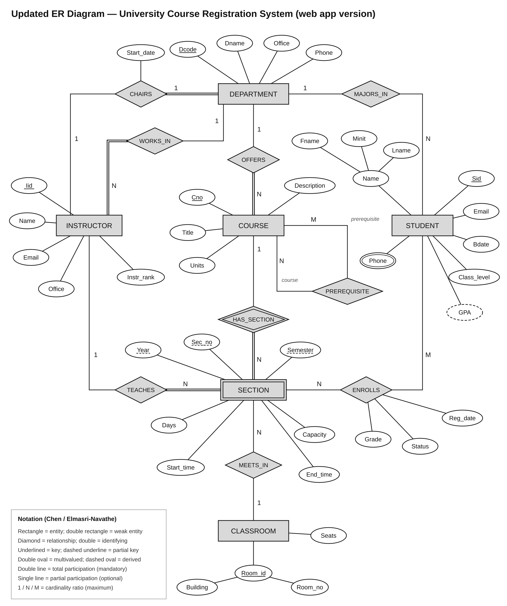
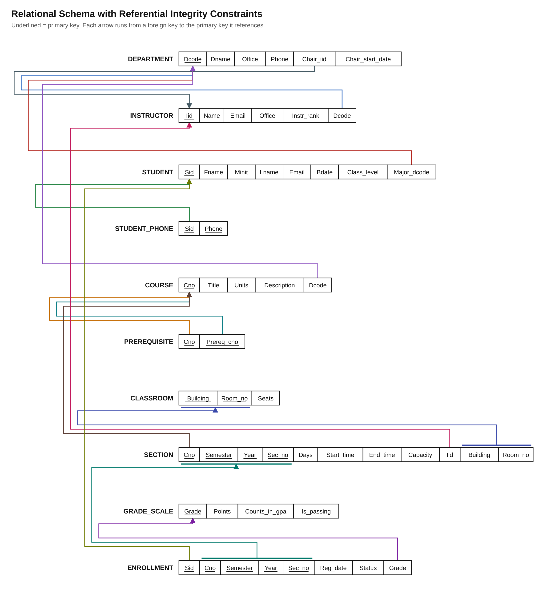
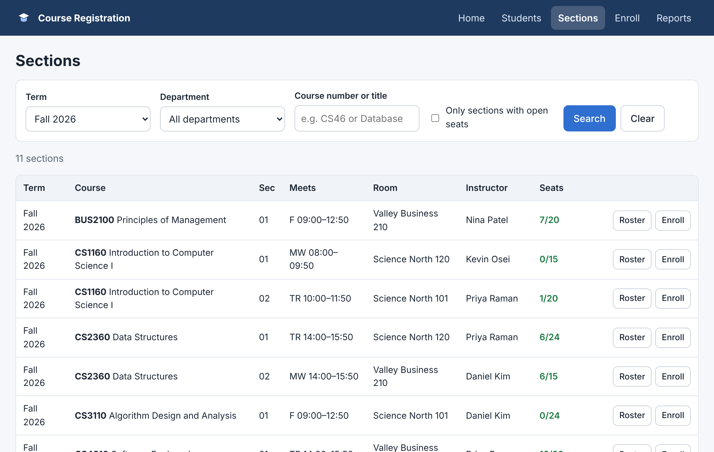
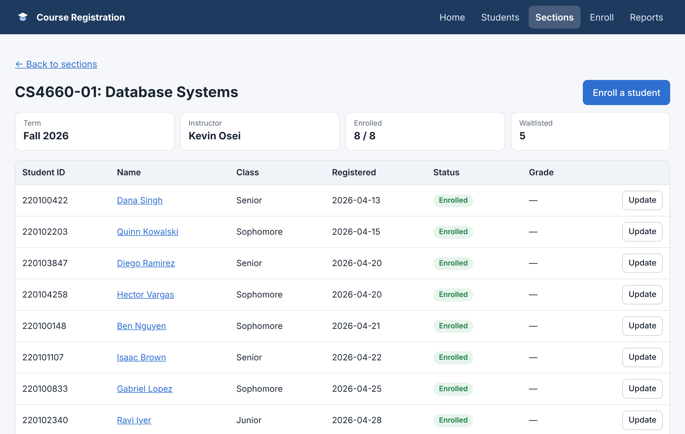
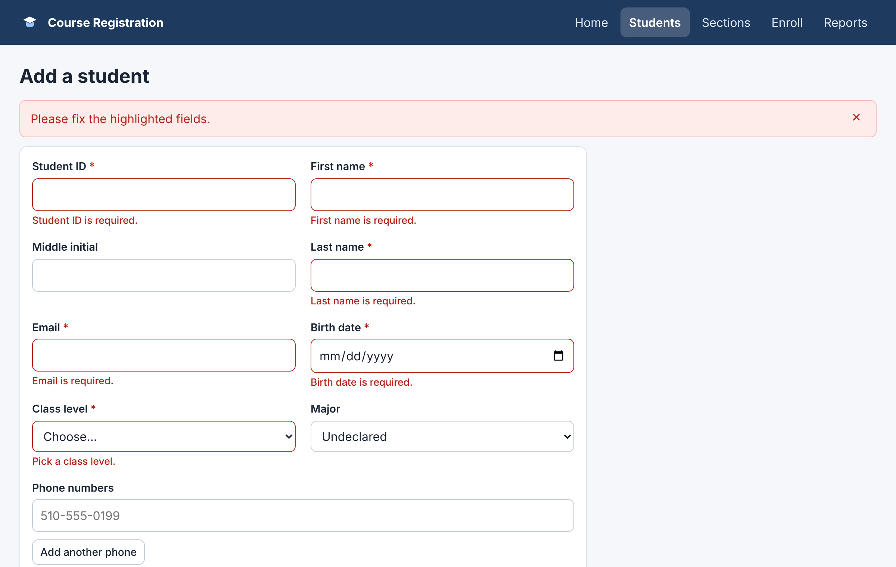
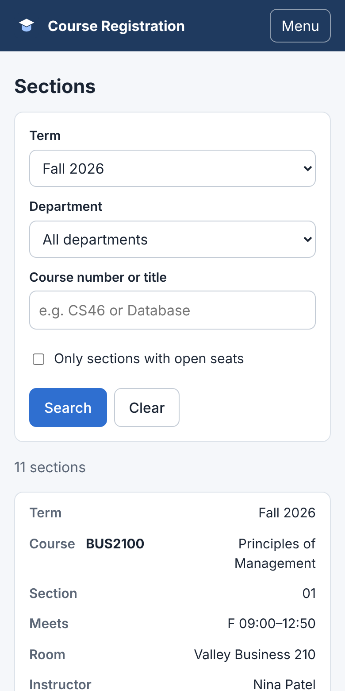

An enterprise database application built on our University Course Registration System design
| Team | Team XY: [member names] |
| Course | Database Systems · Instructor: Tian Zhou |
| Demo video | [link to video, 7 minutes or less] |
| Source code | [GitHub repository link] |
Our application is a web front end for the course registration database we designed in the previous assignment. It lets registrar staff and instructors manage the main activities of a registration system without writing SQL. Users can search students by name, email, ID, major and class level, add new students and edit existing ones. They can browse course sections by term and department with live seat counts, enroll a student in a section, and record a student's status and final grade on the section roster. A student's courses page joins five tables to show every section a student has taken, with the instructor, grade and a GPA calculated in SQL. A reports page groups the data by department, instructor and course.
The backend is written in JavaScript with Node.js and Express and talks to a local MySQL 8 database through the mysql2 driver. Every user-supplied value is passed as a parameter of a prepared statement, and all filtering, joining and aggregation happens in SQL. JavaScript only validates input, controls the flow of a request and formats results. The frontend is a React single-page application built with Vite and styled with plain CSS. It works on phones as well as desktop browsers.
The enrollment feature enforces two rules that the schema alone cannot express. A student must have passed every prerequisite of a course before registering. If a section is already at capacity, the student is placed on the waitlist instead of being enrolled. Both checks run inside a transaction that locks the section row, so two simultaneous registrations cannot overfill a section.


We kept the entities, relationships and keys from our final ER design and made four changes while implementing it. First, we added a GRADE_SCALE lookup table (Grade, Points, Counts_in_gpa, Is_passing). In the earlier design, the meaning of a grade, such as how many grade points an A- is worth and whether a C- counts as passing, existed only in application logic. Storing it in a table lets the database calculate GPA and check prerequisites with plain joins. It also lets ENROLLMENT.Grade be a foreign key instead of a hard-coded list. The table keeps the dependency Grade → Points out of ENROLLMENT, where it would otherwise be a transitive dependency on the registration key.
Second, we renamed two attributes that clash with SQL keywords. Rank became instr_rank because RANK is a reserved word in MySQL 8, and Class became class_level for clarity. Third, we added CHECK constraints for business values that were only described in words before: allowed semesters, class levels, instructor ranks, enrollment statuses, unit and capacity ranges, and that a course cannot be its own prerequisite. Fourth, we made the referential actions explicit. Deleting a student, section or instructor that history depends on is restricted, deleting a student cascades to their phone numbers, and deleting a classroom sets the room of its sections to NULL. We also added three indexes to speed up the searches the application runs most often.
A relation is in 3NF when, for every non-trivial functional dependency X → A, either X is a superkey or A is part of a candidate key. The table lists the dependencies we identified from the requirements. In every relation the left side of each dependency is a candidate key, so every relation is in fact in Boyce–Codd Normal Form, which implies 3NF.
| Relation | Functional dependencies | Candidate keys |
|---|---|---|
| DEPARTMENT | Dcode → Dname, Office, Phone, Chair_iid, Chair_start_date; Dname → Dcode | Dcode, Dname |
| INSTRUCTOR | Iid → Name, Email, Office, Instr_rank, Dcode; Email → Iid | Iid, Email |
| STUDENT | Sid → Fname, Minit, Lname, Email, Bdate, Class_level, Major_dcode; Email → Sid | Sid, Email |
| STUDENT_PHONE | No non-trivial dependencies (all-key relation) | (Sid, Phone) |
| COURSE | Cno → Title, Units, Description, Dcode | Cno |
| PREREQUISITE | No non-trivial dependencies (all-key relation) | (Cno, Prereq_cno) |
| CLASSROOM | (Building, Room_no) → Seats | (Building, Room_no) |
| SECTION | (Cno, Semester, Year, Sec_no) → Days, Start_time, End_time, Capacity, Iid, Building, Room_no | (Cno, Semester, Year, Sec_no) |
| GRADE_SCALE | Grade → Points, Counts_in_gpa, Is_passing | Grade |
| ENROLLMENT | (Sid, Cno, Semester, Year, Sec_no) → Reg_date, Status, Grade | (Sid, Cno, Semester, Year, Sec_no) |
The design is in 1NF because every attribute is atomic. The multivalued Phone attribute was moved to STUDENT_PHONE, the composite Name of a student was split into Fname, Minit and Lname, and the derived GPA is calculated instead of stored. It is in 2NF because no non-key attribute depends on only part of a composite key. In SECTION, for example, Capacity and Iid describe the whole offering, not the course alone. In ENROLLMENT, Grade depends on the student and the specific section together.
It is in 3NF because there are no transitive dependencies. We avoided several that would have been easy to introduce. A classroom's Seats are stored in CLASSROOM and not repeated in SECTION, since SECTION → (Building, Room_no) → Seats would be transitive. A course's Title and Units stay in COURSE rather than being copied into SECTION or ENROLLMENT. A department's name lives only in DEPARTMENT, while STUDENT, INSTRUCTOR and COURSE store just its code. Grade points live in GRADE_SCALE rather than in ENROLLMENT.
Entity integrity is enforced with a primary key on every table, including the composite keys of SECTION (the weak entity's owner key plus its partial key) and ENROLLMENT. Referential integrity is enforced by thirteen foreign keys, shown as arrows in Figure 2. We also used NOT NULL on every attribute the requirements make mandatory, UNIQUE on Dname and on both email columns, and CHECK constraints for value ranges and allowed values. The full script is db/schema.sql. Two representative tables:
CREATE TABLE section (
cno VARCHAR(10) NOT NULL, semester VARCHAR(6) NOT NULL, year SMALLINT NOT NULL, sec_no CHAR(2) NOT NULL,
days VARCHAR(5), start_time TIME, end_time TIME, capacity SMALLINT NOT NULL,
iid INT NOT NULL, building VARCHAR(20), room_no VARCHAR(10),
CONSTRAINT pk_section PRIMARY KEY (cno, semester, year, sec_no),
CONSTRAINT chk_section_semester CHECK (semester IN ('Spring', 'Summer', 'Fall')),
CONSTRAINT chk_section_capacity CHECK (capacity BETWEEN 1 AND 500),
CONSTRAINT chk_section_times CHECK (start_time IS NULL OR end_time IS NULL OR end_time > start_time),
CONSTRAINT fk_section_course FOREIGN KEY (cno) REFERENCES course (cno) ON UPDATE CASCADE ON DELETE RESTRICT,
CONSTRAINT fk_section_instructor FOREIGN KEY (iid) REFERENCES instructor (iid) ON UPDATE CASCADE ON DELETE RESTRICT,
CONSTRAINT fk_section_classroom FOREIGN KEY (building, room_no) REFERENCES classroom (building, room_no)
ON UPDATE CASCADE ON DELETE SET NULL);
CREATE TABLE enrollment (
sid INT NOT NULL, cno VARCHAR(10) NOT NULL, semester VARCHAR(6) NOT NULL, year SMALLINT NOT NULL,
sec_no CHAR(2) NOT NULL, reg_date DATE NOT NULL, status VARCHAR(10) NOT NULL DEFAULT 'Enrolled', grade VARCHAR(2),
CONSTRAINT pk_enrollment PRIMARY KEY (sid, cno, semester, year, sec_no),
CONSTRAINT chk_enrollment_status CHECK (status IN ('Enrolled', 'Waitlisted', 'Dropped')),
CONSTRAINT fk_enrollment_grade FOREIGN KEY (grade) REFERENCES grade_scale (grade),
CONSTRAINT fk_enrollment_student FOREIGN KEY (sid) REFERENCES student (sid) ON UPDATE CASCADE ON DELETE RESTRICT,
CONSTRAINT fk_enrollment_section FOREIGN KEY (cno, semester, year, sec_no)
REFERENCES section (cno, semester, year, sec_no) ON UPDATE CASCADE ON DELETE RESTRICT);
DEPARTMENT and INSTRUCTOR reference each other, because an instructor works in a department and a department is chaired by an instructor. We create DEPARTMENT first with a nullable Chair_iid, add the foreign key after INSTRUCTOR exists, and fill in chairs once the instructors are loaded. The sample-data script (db/seed.sql) loads 4 departments, 11 instructors, 32 students, 15 courses, 12 prerequisites, 6 classrooms, 36 sections across four terms and 266 registrations. Fall 2025 and Spring 2026 are graded, Fall 2026 is in progress, and Spring 2027 is open for registration.
All queries are prepared statements. The ? placeholders are filled by the mysql2 driver, so user input is never concatenated into SQL text. Where a filter is optional, the backend adds that condition and its parameter only when the user fills the field in.
This lets staff find a student by any part of their name or email, or the start of their ID, and narrow the list by major and class level. It joins DEPARTMENT to show the major's name and STUDENT_PHONE to list every phone number.
SELECT s.sid, s.fname, s.minit, s.lname, s.email, s.bdate, s.class_level, s.major_dcode,
d.dname AS major_name, GROUP_CONCAT(p.phone ORDER BY p.phone SEPARATOR ', ') AS phones
FROM student s
LEFT JOIN department d ON d.dcode = s.major_dcode
LEFT JOIN student_phone p ON p.sid = s.sid
WHERE (CONCAT(s.fname, ' ', s.lname) LIKE ? OR s.email LIKE ? OR CAST(s.sid AS CHAR) LIKE ?)
AND s.major_dcode = ? AND s.class_level = ?
GROUP BY s.sid, s.fname, s.minit, s.lname, s.email, s.bdate, s.class_level, s.major_dcode, d.dname
ORDER BY s.lname, s.fname;
Students and advisors use this to find a section to register for. It joins four tables and counts enrolled and waitlisted students per section, and the "open seats only" option is a HAVING condition on the computed seats.
SELECT sec.cno, c.title, sec.semester, sec.year, sec.sec_no, sec.days, sec.start_time, sec.end_time,
sec.building, sec.room_no, sec.capacity, i.name AS instructor,
COUNT(CASE WHEN e.status = 'Enrolled' THEN 1 END) AS enrolled,
COUNT(CASE WHEN e.status = 'Waitlisted' THEN 1 END) AS waitlisted,
sec.capacity - COUNT(CASE WHEN e.status = 'Enrolled' THEN 1 END) AS seats_left
FROM section sec
JOIN course c ON c.cno = sec.cno
JOIN instructor i ON i.iid = sec.iid
LEFT JOIN enrollment e ON e.cno = sec.cno AND e.semester = sec.semester
AND e.year = sec.year AND e.sec_no = sec.sec_no
WHERE sec.semester = ? AND sec.year = ? AND c.dcode = ? AND (c.cno LIKE ? OR c.title LIKE ?)
GROUP BY sec.cno, c.title, sec.semester, sec.year, sec.sec_no, sec.days, sec.start_time, sec.end_time,
sec.building, sec.room_no, sec.capacity, i.iid, i.name, c.dcode
HAVING seats_left > 0
ORDER BY sec.year DESC, FIELD(sec.semester, 'Fall', 'Summer', 'Spring'), sec.cno, sec.sec_no;
This adds a new student and their phone numbers in one transaction, so a failed phone insert never leaves a half-created student behind.
INSERT INTO student (sid, fname, minit, lname, email, bdate, class_level, major_dcode) VALUES (?, ?, ?, ?, ?, ?, ?, ?); INSERT INTO student_phone (sid, phone) VALUES (?, ?); -- once per phone number
This corrects a student's details or records a change of major. The WHERE clause targets one primary key, and the API reports an error if no row matched. Phone numbers are replaced as a set inside the same transaction.
UPDATE student SET fname = ?, minit = ?, lname = ?, email = ?, bdate = ?, class_level = ?, major_dcode = ? WHERE sid = ?; DELETE FROM student_phone WHERE sid = ?; INSERT INTO student_phone (sid, phone) VALUES (?, ?);
This is the main registration action. Inside one transaction the backend locks the section row, checks for missing prerequisites, counts the seats taken and inserts the registration as Enrolled or Waitlisted.
SELECT cno, capacity FROM section
WHERE cno = ? AND semester = ? AND year = ? AND sec_no = ? FOR UPDATE;
SELECT p.prereq_cno -- prerequisites not yet passed
FROM prerequisite p
WHERE p.cno = ?
AND NOT EXISTS (SELECT 1 FROM enrollment e JOIN grade_scale g ON g.grade = e.grade
WHERE e.sid = ? AND e.cno = p.prereq_cno AND g.is_passing = TRUE);
SELECT COUNT(*) AS n FROM enrollment
WHERE cno = ? AND semester = ? AND year = ? AND sec_no = ? AND status = 'Enrolled';
INSERT INTO enrollment (sid, cno, semester, year, sec_no, reg_date, status)
VALUES (?, ?, ?, ?, ?, ?, ?); -- status = 'Enrolled' or 'Waitlisted'
Instructors use the section roster to record final grades, drop a student, or move a student off the waitlist when a seat opens. The update targets exactly one registration through the full primary key. The backend first checks that the grade exists in GRADE_SCALE and that promoting a waitlisted student would not exceed capacity.
UPDATE enrollment SET status = ?, grade = ? WHERE sid = ? AND cno = ? AND semester = ? AND year = ? AND sec_no = ?;
This gives an advisor a student's full record in one view: every section taken, with course title, units, instructor, status and grade. It joins five tables. The second query calculates the unit-weighted GPA in SQL, counting only grades that count toward GPA.
SELECT e.semester, e.year, e.cno, c.title, c.units, e.sec_no, i.name AS instructor,
e.status, e.grade, g.points
FROM enrollment e
JOIN section sec ON sec.cno = e.cno AND sec.semester = e.semester
AND sec.year = e.year AND sec.sec_no = e.sec_no
JOIN course c ON c.cno = e.cno
JOIN instructor i ON i.iid = sec.iid
LEFT JOIN grade_scale g ON g.grade = e.grade
WHERE e.sid = ?
ORDER BY e.year DESC, FIELD(e.semester, 'Fall', 'Summer', 'Spring'), e.cno;
SELECT COUNT(*) AS graded_courses, COALESCE(SUM(c.units), 0) AS graded_units,
ROUND(SUM(g.points * c.units) / NULLIF(SUM(c.units), 0), 2) AS gpa
FROM enrollment e
JOIN course c ON c.cno = e.cno
JOIN grade_scale g ON g.grade = e.grade
WHERE e.sid = ? AND g.counts_in_gpa = TRUE;
The section roster is a second join query. It lists the students in one section (ENROLLMENT joined to STUDENT), ordered so enrolled students come first and then the waitlist in registration order.
Enrollment by department. This shows department chairs how full their sections are for a term, which helps them decide where to add or cut sections. A derived table first counts students per section, then the outer query groups the sections by department.
SELECT d.dcode, d.dname, COUNT(*) AS sections, SUM(sc.capacity) AS seats,
SUM(sc.enrolled) AS enrolled, SUM(sc.waitlisted) AS waitlisted,
ROUND(100 * SUM(sc.enrolled) / SUM(sc.capacity), 1) AS fill_percent
FROM (SELECT sec.cno, sec.semester, sec.year, sec.sec_no, sec.capacity, sec.iid,
COUNT(CASE WHEN e.status = 'Enrolled' THEN 1 END) AS enrolled,
COUNT(CASE WHEN e.status = 'Waitlisted' THEN 1 END) AS waitlisted
FROM section sec
LEFT JOIN enrollment e ON e.cno = sec.cno AND e.semester = sec.semester
AND e.year = sec.year AND e.sec_no = sec.sec_no
WHERE sec.semester = ? AND sec.year = ?
GROUP BY sec.cno, sec.semester, sec.year, sec.sec_no, sec.capacity, sec.iid) AS sc
JOIN course c ON c.cno = sc.cno
JOIN department d ON d.dcode = c.dcode
GROUP BY d.dcode, d.dname
ORDER BY enrolled DESC;
Instructor teaching load. This uses the same per-section counts, grouped by instructor. It shows each instructor's number of sections, total students, average class size (AVG) and largest class (MAX), so a chair can balance assignments.
Grades by course. This shows which courses students struggle in. For each course it reports the number of grades recorded, the average grade points, the number of A, D/F and W grades, and the pass rate.
SELECT c.cno, c.title, COUNT(*) AS graded,
ROUND(AVG(CASE WHEN g.counts_in_gpa THEN g.points END), 2) AS avg_grade_points,
SUM(CASE WHEN g.grade IN ('A', 'A-') THEN 1 ELSE 0 END) AS a_grades,
SUM(CASE WHEN g.grade IN ('D', 'F') THEN 1 ELSE 0 END) AS d_or_f,
SUM(CASE WHEN g.grade = 'W' THEN 1 ELSE 0 END) AS withdrawals,
ROUND(100 * SUM(CASE WHEN g.is_passing THEN 1 ELSE 0 END) / COUNT(*), 1) AS pass_percent
FROM enrollment e
JOIN grade_scale g ON g.grade = e.grade
JOIN course c ON c.cno = e.cno
WHERE e.semester = ? AND e.year = ?
GROUP BY c.cno, c.title
ORDER BY avg_grade_points DESC;
The interface has a navigation bar with five sections: Home, Students, Sections, Enroll and Reports. On a phone it collapses into a menu button, and tables become stacked cards. Every form has labeled fields, marks required fields with an asterisk and has a Cancel button that leaves without saving. After an insert or update, the app reloads the record from MySQL and shows a green confirmation message, so the user can see the change was saved.
Input is validated twice. The browser checks required fields and formats before sending, and highlights the field that needs fixing. The backend repeats every check independently in server/validate.js, because a request can always bypass the browser. Errors from MySQL itself, such as a duplicate key, a missing foreign-key target or a CHECK violation, are caught and turned into plain messages, such as "A student with ID 220100148 already exists." The server never crashes or shows a raw SQL error.




We used React for the user interface and Express for the server. React splits the interface into reusable components, such as the form field with its error message and the status badge. It keeps each form's values and errors in component state, which is what lets us show validation errors next to the right field and reset a form on Cancel. React Router gives each page its own URL, so a search or a section roster can be bookmarked and the browser's back button works. Express routes each API request to a handler and centralizes error handling in one middleware, which is how every database error gets a consistent message. The database work stays in SQL on the server; React never receives a whole table to filter.
We tested the application on [operating system and version] using [browser and version], and on [phone model] using [mobile browser].
We wrote an automated suite of 18 API tests (tests/api.test.js, run with npm test). The tests confirm the response and then query MySQL directly to verify that each insert or update was saved and that it changed only the intended row. We also walked through every feature in the browser. The main cases are below. Every one gave the expected result.
| Case | Input | Result |
|---|---|---|
| Search with filters | Name "Nguyen", class level Sophomore | Only matching students are listed |
| Insert a student | Valid new student with a phone | Saved, confirmation shown, row present in MySQL |
| Missing required input | Empty Add Student form | Six fields highlighted with messages; nothing saved |
| Invalid values | Email "not-an-email", ID "12", birth date 2004-02-31 | Each field rejected with a specific message |
| Duplicate primary key | New student with existing ID 220100148 | "A student with ID 220100148 already exists." |
| Duplicate UNIQUE value | New student reusing an existing email | "Another student already uses that email." |
| Invalid foreign key | Major "XYZ" sent to the API | "Major XYZ is not a department in the database." |
| Update a student | Change class level and phone list | Only that student changed; the change is visible after reload |
| Update a missing record | Student 111111111 | 404 "No student found" |
| Enroll | New student into CS1160-01, Fall 2026 | Enrolled; appears on the roster |
| Prerequisite rule | New student into CS4660, Spring 2027 | Blocked: has not passed CS2360 |
| Duplicate registration | Same student, same course and term, other section | Rejected as already enrolled |
| Section that does not exist | CS1160 section 09 | 404 with a clear message |
| Capacity | Promote a waitlisted student in full CS4660-01 | Refused: section is full (8/8) |
| Record a grade | Grade A- for the new registration; then invalid grade "Z" | A- saved to exactly one row; "Z" rejected |
| Reports | All three reports, all terms and a single term | Grouped rows returned and displayed |
| Cancel | Edit a student, change a field, press Cancel | Returns to the list; nothing saved |
R. Elmasri and S. B. Navathe, Fundamentals of Database Systems, 7th ed., Pearson. Used for the ER notation and the ER-to-relational mapping. MySQL 8.0 Reference Manual, Oracle, https://dev.mysql.com/doc/refman/8.0/en/. Express 4 documentation, https://expressjs.com/. node-mysql2, https://github.com/sidorares/node-mysql2. React documentation, https://react.dev/. React Router, https://reactrouter.com/. Vite, https://vitejs.dev/. diagrams.net (draw.io), used to edit the diagrams. All sample data is fictional.
[List any other code, templates, tutorials or AI tools your team used, as required by the originality policy.]